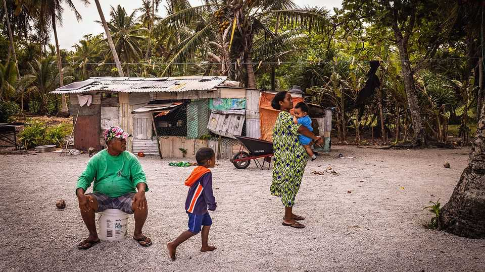

A tiny Pacific country rolls out universal basic income
The Marshall Islands uses an American windfall to pay every citizen

Oct 29th 2026
SOON AFTER the second world war, America went looking for a place to test its fast-expanding nuclear arsenal. It settled on the Marshall Islands, then an American-administered collection of atolls scattered across a vast stretch of the Pacific. Over 12 years the Americans carried out 67 nuclear tests. The resulting radiation did lasting damage to the health of the Marshallese, but it also shaped the islands’ relationship with America.
These days the country of 42,000 people is independent, but gets aid from America under a “compact of free association” in exchange for allowing it military access. Some of that money is now financing a different sort of experiment. For nearly a year every citizen in the Marshall Islands, including children, has been getting a quarterly payment of about $200. The precise amount varies, because the government shares a fixed pot equally among all those enrolled.
The programme, Enra Jen Lale Rara (sharing plates to care for those around us), is believed to be the world’s first national universal basic income (UBI) scheme, a term that describes unconditional government payment given to all citizens as a supplement to or replacement for wages. (Other UBI experiments have covered small groups of people, or individual cities, provinces or groups of villages.)
David Paul, the finance minister and the programme’s architect, has said it will give Marshallese “peace of mind” amid concerns over the cost of living. He also hopes it will hand them a reason to stay on the islands. Under the country’s compact with America, Marshallese citizens can live and work there freely (around 44,000 already do so).
Officials insist that the payment is not intended to replace work; it is not nearly big enough to do that. At around $800 a year, it amounts to only about a tenth of the Marshall Islands’ income per person. Still, in American terms, that would be equivalent to an annual payment of roughly $9,000, a not inconsiderable sum. Unsurprisingly, the transfers are popular: almost everyone has enrolled. It is however too early to draw conclusions about the impact on labour supply, says Stefania Pozzi, an economist working with the country’s finance ministry.
More certain, though, are the impacts on consumption. On payment days offices empty in Majuro, the capital, which employs the bulk of the labour force, as workers queue to collect cheques; soon afterwards shops and restaurants fill up as they spend the money. “Families have found it hugely beneficial,” says Giff Johnson, editor of the Marshall Islands Journal. Much of the spending has been on food, but people have also used the cash for bigger purchases, like air-conditioners and lawnmowers, he says. Inflation, another common concern with cash transfers, has risen, but officials attribute that largely to the economic shock from the war in Iran rather than specifically to the UBI. The scheme is reaching people on the country’s more remote islands, many of which lack banks, ATMs or reliable internet.
The Marshall Islands’ compact with America has helped it overcome the biggest obstacle to UBI. The cost of it amounts to a whopping 8% or so of GDP, but is paid from an American trust fund, now worth around $1.8bn. Still, the IMF worries that the payments are already taking the place of more useful long-term spending on infrastructure and climate adaptation. Even before the first payment in November 2025, it recommended replacing the UBI with a targeted scheme at the “first available and feasible opportunity”. The Marshallese government argues that deciding who should qualify would be costly and cumbersome.
No evaluation of the scheme has yet been published, but plenty of countries are watching the experiment closely. All the economies of island-states in the Pacific are to some extent dependent on remittances and are vulnerable to economic shocks. But conventional social-protection efforts are often very difficult to implement in populations that are scattered across the ocean’s islands.
Bigger countries should be interested too. The emergence of artificial intelligence and its potential for job displacement have revived talk of UBI everywhere. AI-induced concern is one reason the Opportunity Party, a newish centrist group in New Zealand, is campaigning on a “citizen’s income” ahead of elections next month. The Marshall Islands’ UBI may be tiny, but its lessons could travel far beyond its shores. ■
For exclusive coverage of Asian politics, economics and security, sign up to Asia Bulletin, our weekly subscriber-only newsletter.